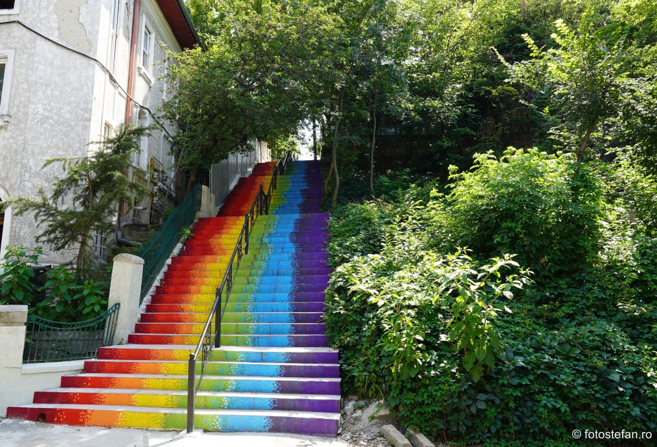
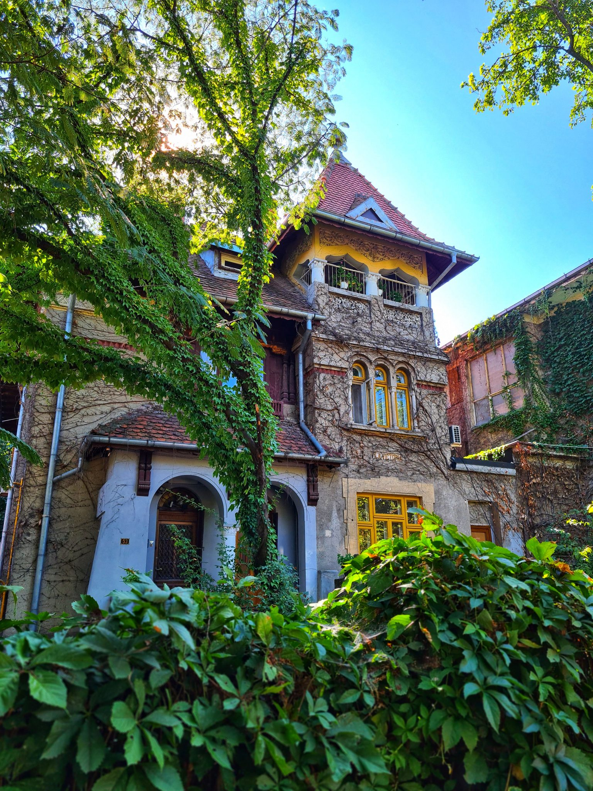

Let's take a virtual walk together
Cotroceni is one of the most historic and elegant neighborhoods in Bucharest, known for its quiet streets, green spaces, and rich cultural heritage. Located in the western part of the city, Cotroceni has preserved much of its architectural charm, offering a glimpse into Bucharest’s past while remaining an active and vibrant urban area.
The history of Cotroceni dates back to the 17th century, when the Cotroceni Monastery was founded by Prince Șerban Cantacuzino. Over time, the area developed around the monastery and later became associated with the Romanian royal family. The Cotroceni Palace, built in the late 19th century, served as a royal residence and is today one of the most important historical landmarks in the neighborhood.
During the late 19th and early 20th centuries, Cotroceni evolved into a residential area for intellectuals, professors, and high-ranking officials. Many of the houses built during this period reflect architectural styles such as Neo-Romanian, Art Nouveau, and Eclecticism, which contribute to the unique aesthetic of the neighborhood. These buildings give Cotroceni a distinct identity within Bucharest.
Cotroceni holds an important place in Bucharest’s cultural life due to its academic and intellectual atmosphere. The neighborhood is home to the University of Medicine and Pharmacy “Carol Davila,” as well as museums, cultural institutions, and historical sites. Its calm environment and cultural significance make it a favored area for artists, students, and visitors seeking a deeper understanding of the city.
Today, Cotroceni is appreciated not only for its historical importance but also for its strong sense of community. Small cafés, local events, and community initiatives have transformed the neighborhood into a lively cultural space, while still preserving its traditional character. This balance between history and modern life makes Cotroceni an essential part of Bucharest’s cultural identity.
 What can we do in Cotroceni now?
| Place | Type | Adress |
|---|---|---|
| Cotroceni National Museum | Museum | Bulevardul Geniului 1 |
| Infinitea | Coffee & tea place | Str. Doctor Grigore Romniceau 7 |
| Liviu Rebreanu Mmemorial Home | Museum | Bd. Prfesor Dcotr Gheorghe Marinescu 19 |
| Bothanical Garden | Museum | Sos. Cotroceni 32 |
| Sahar Coffee & Social Space | Coffee Place | Str. Doctor Joseph Lister 19 |
| Throwback Coffee | Coffee Place | Str Doctor Petre Herescu 26 |
| The Great Hill | Restaurant | Str Doctor Louis Pasteur 6 |